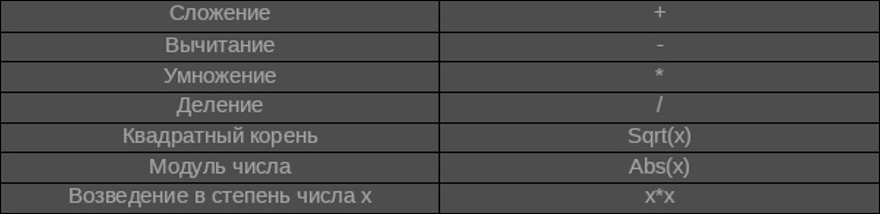

- Выражение – это набор величин, которые объединены знаками операций, приводящие к вычислению значения операндов.
- Арифметические выражения состоят из чисел и переменных, арифметических операций и служат для нахождения числового значения.
- Логическое выражение — это составное высказывание, состоящее из простых высказываний, которые объединены логическими операциями (НЕ, И, ИЛИ).
Выражения
Линейная запись формул требует введения дополнительных обозначений математических функций.
- Общий вид:
<имя_переменной> := <выражение> - Знак «:=» читается как присвоить и заменяет предыдущее значение переменной, стоящей в левой части на новое, которое находится в правой части.
- Знаки «=»«:=» — это разные знаки. Знак равно обозначает равенство двух величин. А знак «:=» присваивает новое значение переменной.
- Свойства присваивания:
1. Если переменной не присвоено значение, она является неопределённой;
2. Присвоенное значение переменной сохраняется до тех пор, пока не будет выполнятся новая операция присваивания с этой же переменной;
3. При присваивании переменной очередного значения, предыдущее значение из памяти стирается.
Команда присваивания
- Следование — алгоритмическая конструкция, в которой действия выполняются последовательно друг за другом.
Следование
- Ветвление — алгоритмическая конструкция, при выполнении которой в зависимости от проверки условия («да» или «нет»), можно выбрать одну из двух последовательностей.
Ветвление
- Язык программирования – это формальный язык, предназначенный для записи алгоритмов, которые будет выполнять компьютер.
- Программа – это алгоритм, записанный на языке программирования.
- Компилятор – это программа, переводящая исходный текст, написанный на языке программирования, в машинные инструкции.
Язык программирования
- Алфавит языка программирования — это все символы или комбинации символов, которые используются при программировании на этом языке.
- В алфавит большенства языков программирования входят:
- Оператор — это неделимая последовательность символов, которая позволяет выполнять определенные алгоритмические действия.
Алфавит и словарь языка
Все буквы английского алфавита: A — Z, a — z
Цифры: 0 — 9
Нижнее подчёркивание: _;
Специальные символы: *,/,;,:,=,+,>,<,!,";
Комбинации символов: >=,<=,++ и другие.
Типы данных, используемые в языке Python
| Тип данных | Значение | Определение в Python | Вариант использования |
| Целые числа | -3, -2, -1, 0, 1, 2, 3 | int | a = int(input()) |
| Вещественные числа | -1.5, -1.1, 0.6, 1.7 | float | a = float(input()) |
| Булевы значения | True, False | True, False | flag = True |
| Строка | 'abracadabra' | str | a = str(5) |
| Список | [1, 2, 3], ['a', 'b', 'c'] | list | a = list(('a', 'b', 'c')) |
| Диапазон | 0, 1, 2, 3, 4, 5 | range | a = range(6) |